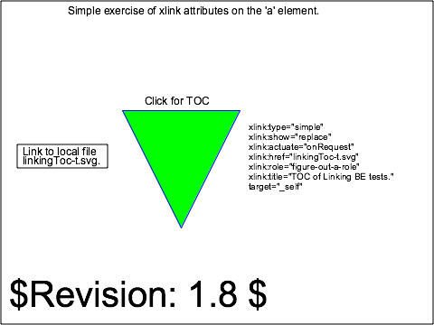

linking-uri-03-t |
||
| SVG Image | INKSCAPE Image | PNG Image |

|
 | |
|
||||||||||||
Verify the handling of the allowable xlink attributes on the 'a' element. The initial view of this test contains a single green triangle, labelling text, and the usual template legend and frame.
There is a link on the triangle, pointing to an external SVG file, which is local (in the same directory). The target file contains SVG 'text' elements which comprise a TOC and brief description of all of the BE test files for Linking. Upon clicking the triangle, the image of the linkingToc-t.svg file should replace the initial view of this test case in the viewer frame.
The purpose of the test is to verify that viewers tolerate the presence of xlink attributes on the 'a' element. The presence of the attributes should not change the behavior of the test in any way. The results of executing the link should be identical to executing the first (topmost) link of linking-a-01-f.
There are two reference images associated with this test case. The first illustrates the correct "start" or initial state of the rendered SVG file. The second illustrates the correct image after the link is activated (to the linkingToc-t.svg file). (Note. This harness does not yet provide access to multiple PNGs; the first, initial-state PNG is shown.)
The test uses the 'rect' element, as well as basic fill (solid simple colors), stroke (black and colored wide and 1-pixel lines), font-family (Arial) and font-size properties.